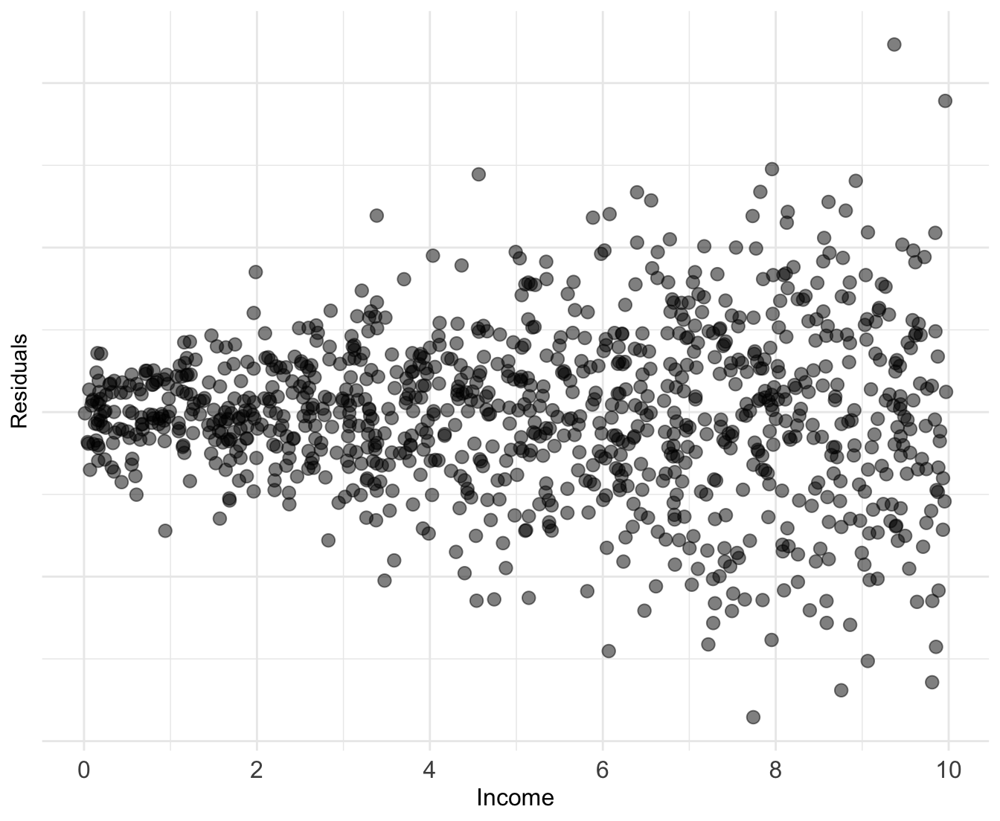

Warning: Using `size` aesthetic for lines was deprecated in ggplot2 3.4.0.
ℹ Please use `linewidth` instead.Residuals vs Errors
The most important assumptions concern the error term \(u_{i}\).
Important: An error \(u_{i}\) and a residual \(\hat{u}_{i}\) are related, but different.
Take for example, a model of the effects of education on wages.
Error:
Difference between the wage of a worker with 11 years of education and the expected wage with 11 years of education
Residual:
Difference between the wage of a worker with 11 years of education and the average wage of workers with 11 years of education
. . .
Population vs. Sample
Residuals vs Errors
A residual tells us how a worker’s wages comapre to the average wages of workers in the sample with the same level of education

Residuals vs Errors
A residual tells us how a worker’s wages comapre to the average wages of workers in the sample with the same level of education

Residuals vs Errors
An error tells us how a worker’s wages compare to the expected wages of workers in the population with the same level of education
Classical Assumptions of OLS
A1. Linearity: The population relationship is linear in parameters with an additive error term
A2. Sample Variation: There is variation in \(X\)
A3. Exogeneity: The \(X\) variable is exogenous
A4. Homosekdasticity: The error term has the same variance for each value of the independent variable
A5. Non-Autocorrelation: The values of error terms have independent distributions
A6. Normality: The population error term is normally distributed with mean zero and variance \(\sigma^{2}\)
A1. Linearity
The population relationship is linear in parameters with an additive error term
Examples
- \(\text{Wage}_i = \beta_1 + \beta_2 \text{Experience}_i + u_i\)
. . .
- \(\log(\text{Happiness}_i) = \beta_1 + \beta_2 \log(\text{Money}_i) + u_i\)
. . .
- \(\sqrt{\text{Convictions}_i} = \beta_1 + \beta_2 (\text{Early Childhood Lead Exposure})_i + u_i\)
. . .
- \(\log(\text{Earnings}_i) = \beta_1 + \beta_2 \text{Education}_i + u_i\)
A1. Linearity
The population relationship is linear in parameters with an additive error term.
Violations
- \(\text{Wage}_i = (\beta_1 + \beta_2 \text{Experience}_i)u_i\)
. . .
- \(\text{Consumption}_i = \frac{1}{\beta_1 + \beta_2 \text{Income}_i} + u_i\)
. . .
- \(\text{Population}_i = \frac{\beta_1}{1 + e^{\beta_2 + \beta_3 \text{Food}_i}} + u_i\)
. . .
- \(\text{Batting Average}_i = \beta_1 (\text{Wheaties Consumption})_i^{\beta_2} + u_i\)
A2. Sample Variation
There is variation in \(X\).
Example
A2. Sample Variation
There is variation in \(X\).
Violation

We will see later that variation matters for inference as well
A3. Exogeneity
The \(X\) variable is exogenous
We can write this as:
\[ \mathbb{E}[(u|X)] = 0 \]
Which essentially says that the expected value of the errors term, conditional on the variable \(X\) is 0. The assignment of \(X\) is effectively random.
A significant implication of this is no selection bias or omitted variable bias
A3. Exogeneity
The \(X\) variable is exogenous
\[ \mathbb{E}[(u|X)] = 0 \]
Example
In the labor market, an important component of \(u\) is unobserved ability
- \(\mathbb{E}(u|\text{Education} = 12) = 0\) and \(\mathbb{E}(u|\text{Education} = 20) = 0\)
- \(\mathbb{E}(u|\text{Education} = 0) = 0\) and \(\mathbb{E}(u|\text{Education} = 40) = 0\)
note: This is an assumption that does not necessarily hold true in real life, but with enough observations we can comfortably assume something like this
A3. Exogeneity
Valid Exogeneity
\[ \mathbb{E}[(u|X)] = 0 \]
Invalid Exogeneity
\[ \mathbb{E}[(u|X)] \neq 0 \]

Interlude: Unbiasedness of OLS
When can we trust OLS?
In estimators, the concept of bias means that the expected value of the estimate is different from the true population parameter.
Graphically we have:
Unbiased estimator: \(\mathop{\mathbb{E}}\left[ \hat{\beta} \right] = \beta\)
Biased estimator: \(\mathop{\mathbb{E}}\left[ \hat{\beta} \right] \neq \beta\)
Is OLS Unbiased?
We require our first 3 assumptions for unbaised OLS estimator
A1. Linearity: The population relationship is linear in parameters with an additive error term
A2. Sample Variation: There is variation in \(X\)
A3. Exogeneity: The \(X\) variable is exogenous
And we can mathematically prove it!
Proving Unbiasedness of OLS
Suppose we have the following model
\[ y_{i} = \beta_{1} + \beta_{2}x_{i} + u_{i} \]
. . .
The slope parameter follows as:
\[ \hat{\beta}_2 = \frac{\sum (x_i - \bar{x})(y_i - \bar{y})}{\sum(x_i - \bar{x})^2} \]
. . .
(As shown in section 2.3 in ItE) that the estimator \(\hat{\beta_2}\), can be broken up into a nonrandom and a random component:
Proving unbiasedness of simple OLS
Substitute for \(y_i\):
\[ \hat{\beta}_2 = \frac{\sum((\beta_1 + \beta_2x_i + u_i) - \bar{y})(x_i - \bar{x})}{\sum(x_i - \bar{x})^2} \]
. . .
Substitute \(\bar{y} = \beta_1 + \beta_2\bar{x}\):
\[ \hat{\beta}_2 = \frac{\sum(u_i(x_i - \bar{x}))}{\sum(x_i - \bar{x})^2} + \frac{\sum(\beta_2x_i(x_i - \bar{x}))}{\sum(x_i - \bar{x})^2} \]
. . .
The non-random component, \(\beta_2\), is factored out:
\[ \hat{\beta}_2 = \frac{\sum(u_i(x_i - \bar{x}))}{\sum(x_i - \bar{x})^2} + \beta_2\frac{\sum(x_i(x_i - \bar{x}))}{\sum(x_i - \bar{x})^2} \]
Proving unbiasedness of simple OLS
Observe that the second term is equal to 1. Thus, we have:
\[ \hat{\beta}_2 = \beta_2 + \frac{\sum(u_i(x_i - \bar{x}))}{\sum(x_i - \bar{x})^2} \]
. . .
Taking the expectation,
\[ \mathbb{E}[\hat{\beta_2}] = \mathbb{E}[\beta] + \mathbb{E} \left[\frac{\sum \hat{u_i} (x_i - \bar{x})}{\sum(x_i - \bar{x})^2} \right] \]
. . .
By Rules 01 and 02 of expected value and A3:
\[ \begin{equation*} \mathbb{E}[\hat{\beta_2}] = \beta + \frac{\sum \mathbb{E}[\hat{u_i}] (x_i - \bar{x})}{\sum(x_i - \bar{x})^2} = \beta \end{equation*} \]
Required Assumptions
A1. Linearity: The population relationship is linear in parameters with an additive error term.
A2. Sample Variation: There is variation in \(X\).
A3. Exogeniety: The \(X\) variable is exogenous
- A3 implies random sampling.
Result: OLS is unbiased.
Classical Assumptions of OLS
A1. Linearity: The population relationship is linear in parameters with an additive error term.
A2. Sample Variation: There is variation in \(X\).
A3. Exogeniety: The \(X\) variable is exogenous
. . .
The following 2 assumptions are not required for unbiasedness…
But they are important for an efficient estimator
Let’s talk about why variance matters
Why variance matters
Unbiasedness tells us that OLS gets it right, on average. But we can’t tell whether our sample is “typical.”
. . .
Variance tells us how far OLS can deviate from the population mean.
- How tight is OLS centered on its expected value?
- This determines the efficiency of our estimator.
Why variance matters
Unbiasedness tells us that OLS gets it right, on average. But we can’t tell whether our sample is “typical.”
The smaller the variance, the closer OLS gets, on average, to the true population parameters on any sample.
- Given two unbiased estimators, we want the one with smaller variance.
- If two more assumptions are satisfied, we are using the most efficient linear estimator.
Classical Assumptions of OLS
A1. Linearity: The population relationship is linear in parameters with an additive error term.
A2. Sample Variation: There is variation in \(X\).
A3. Exogeniety: The \(X\) variable is exogenous
. . .
A4. Homoskedasticity: The error term has the same variance for each value of the independent variable
A4. Homoskedasticity
The error term has the same variance for each value of the independent variable \(x_{i}\)
\[ Var(u|X) = \sigma^{2}. \]
Example:
A4. Homoskedasticity
The error term has the same variance for each value of the independent variable \(x_{i}\)
\[ Var(u|X) = \sigma^{2}. \]
Violation:
A4. Homoskedasticity
The error term has the same variance for each value of the independent variable \(x_{i}\)
\[ Var(u|X) = \sigma^{2}. \]
Violation:
Heteroskedasticity Example
Suppose we study the following relationship:
\[ \text{Luxury Expenditure}_i = \beta_1 + \beta_2 \text{Income}_i + u_i \]
As income increases, variation in luxury expenditures increase
- Variance of \(u_i\) is likely larger for higher-income households
- Plot of the residuals against the household income would likely reveal a funnel-shaped pattern
Common test for heteroskedasticity… Plot the residuals across \(X\)

Classical Assumptions of OLS
A1. Linearity: The population relationship is linear in parameters with an additive error term.
A2.Sample Variation: There is variation in \(X\).
A3. Exogeniety: The \(X\) variable is exogenous
A4. Homoskedasticity: The error term has the same variance for each value of the independent variable
. . .
A5. Non-autocorrelation: The values of error terms have independent distributions
A5. Non-Autocorrelation
The values of error terms have independent distributions1
\[ E[u_i u_j]=0, \forall i \text{ s.t. } i \neq j \]
. . .
Or…
\[ \begin{align*} \mathop{\text{Cov}}(u_i, u_j) &= E[(u_i - \mu_u)(u_j - \mu_u)]\\ &= E[u_i u_j] = E[u_i] E[u_j] = 0, \text{where } i \neq j \end{align*} \]
A5. Non-Autocorrelation
The values of error terms have independent distributions
\[ E[u_i u_j]=0, \forall i \text{ s.t. } i \neq j \]
- Implies no systematic association between pairs of individual \(u_i\)
- Almost always some unobserved correlation across individuals2
- Referred to as clustering problem.
- An easy solution exists where we can adjust our standard errors
Let’s take a moment to talk about the variance of the OLS estimator
\[ Var(\hat{\beta}_{1}) = \dfrac{ \sigma^{2} }{ \sum (x_{i} - \bar{x})^{2} } \]
Classical Assumptions of OLS
A1. Linearity: The population relationship is linear in parameters with an additive error term.
A2. Sample Variation: There is variation in \(X\).
A3. Exogeniety: The \(X\) variable is exogenous
A4. Homoskedasticity: The error term has the same variance for each value of the independent variable
A5. Non-autocorrelation: The values of error terms have independent distributions
If A4 and A5 are satisfied, along with A1, A2, and A3, then we are using the most efficient linear estimator
Classical Assumptions of OLS
A1. Linearity: The population relationship is linear in parameters with an additive error term.
A2. Sample Variation: There is variation in \(X\).
A3. Exogeniety: The \(X\) variable is exogenous
A4. Homoskedasticity: The error term has the same variance for each value of the independent variable
A5. Non-autocorrelation: The values of error terms have independent distributions
. . .
A6. Normality The population error term in normally distributed with mean zero and variance \(\sigma^{2}\)
A6. Normality
The population error term in normally distributed with mean zero and variance \(\sigma^{2}\)
Also known as:
\[ u \sim N(0,\sigma^{2}) \]
Where \(\sim\) means distributed by and \(N\) stands for normal distribution
However, A6 is not required for efficiency nor unbiasedness